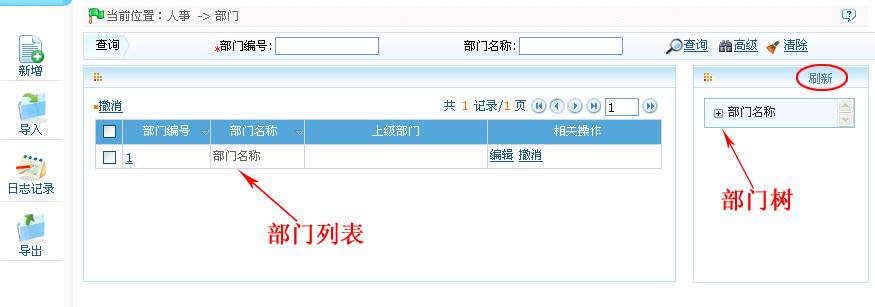
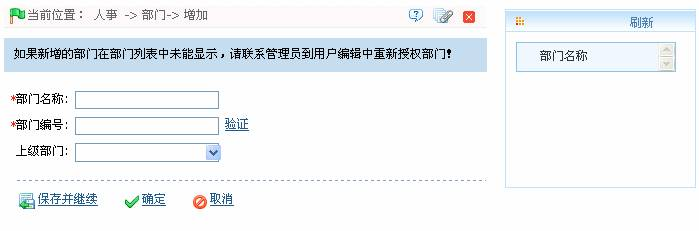

4.2 部门管理
单击【人事】 【部门】，进入部门页面，如下图所示：
【部门】，进入部门页面，如下图所示：

在对公司人员进行管理之前，需要对公司的部门组织架构进行描述和管理。第一次使用本系统时，系统默认已有一个名为【部门名称】，编号为【1】的一级部门，该部门可以被编辑（修改），但不能被撤销。
部门管理主要功能包括新增部门和部门维护。
1、新增部门操作
（1）、点击【人事】 【部门】
【部门】 【新增】，进入新增部门页面：
【新增】，进入新增部门页面：

根据需要设置各参数，设置方法如下：
部门名称：输入部门名称，可为任意字符（最多100个字符组合）。
部门编号：输入部门编号。不能与其他部门编号重复，长度不能超过20位，可以点击【验证】确认是否重复。
上级部门：单击按钮，在弹出的部门下拉框中，选择该部门的上级部门。
 备注：用户可以通过【导入】方式，将其他软件或资料中的部门信息导入到本系统，具体操作请参见附录1 常用操作中的4. 导入。其中【上级部门】项目是确定公司部门组织架构的重要参数。在界面右侧会以部门树的形式显示公司的部门结构图。（单击【刷新】按钮，可刷新部门树。）
备注：用户可以通过【导入】方式，将其他软件或资料中的部门信息导入到本系统，具体操作请参见附录1 常用操作中的4. 导入。其中【上级部门】项目是确定公司部门组织架构的重要参数。在界面右侧会以部门树的形式显示公司的部门结构图。（单击【刷新】按钮，可刷新部门树。）
（2）、设置完成后，单击【确定】保存（若需继续添加部门，则单击【保存并继续】按钮），并返回部门页面，部门列表中将显示刚新增的部门信息。
2、部门维护
部门维护包括编辑部门和撤消部门：
如果公司有部门变动或组织结构发生变化，用户可使用编辑部门功能进行修改，如部门的名称、编号或上级部门。直接点击需修改的部门的部门名称或点击部门所在行的“相关操作”下的【编辑】按钮，进入编辑界面进行修改，修改完成后，单击【确定】按钮，保存修改后的部门信息。
-
 撤销部门
撤销部门
单击 选中需撤销的部门，然后单击“部门”列表左上方的【撤消】按钮，或直接点击该部门所在行的“相关操作”下的【撤消】按钮，进入撤销部门的确认页面，单击【确定】按钮，确认并撤销被选中的部门。
选中需撤销的部门，然后单击“部门”列表左上方的【撤消】按钮，或直接点击该部门所在行的“相关操作”下的【撤消】按钮，进入撤销部门的确认页面，单击【确定】按钮，确认并撤销被选中的部门。
（1）、部门不能随意删改。如果随意删改将会导致已经属于该部门的人员没有归属。另外也会造成一些历史资料无法进行查询，如果确实需要删改时，请先将部门人员调动至其他部门，再行操作；
（2）、被删除的部门的部门编号，不可再次使用。